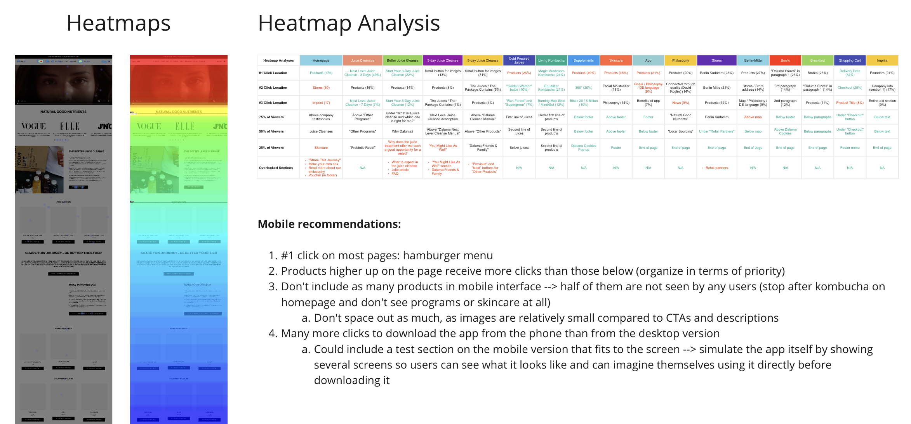
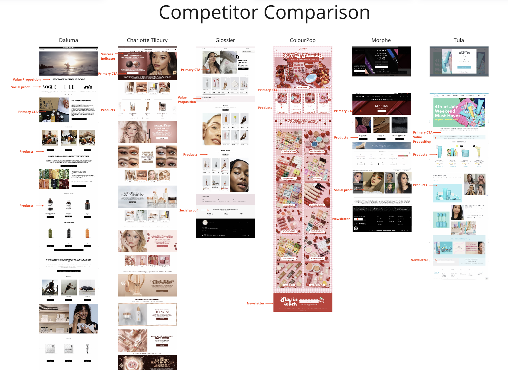
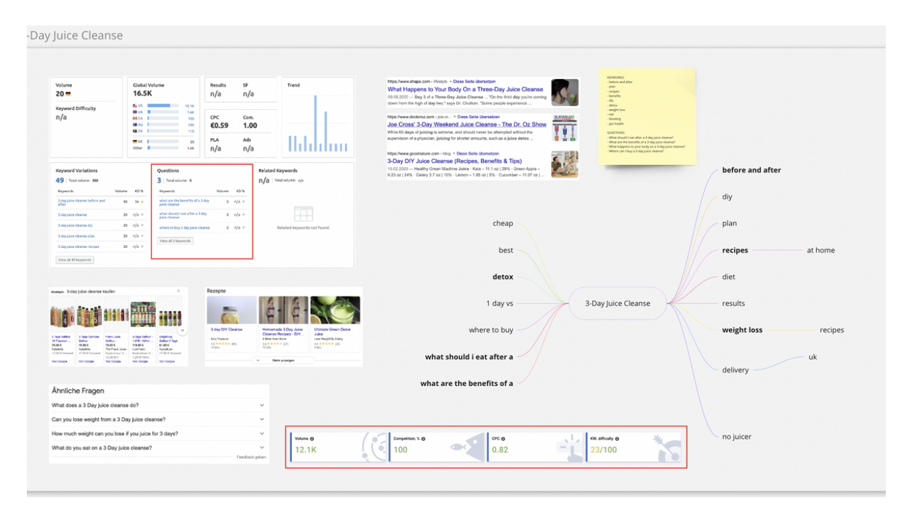
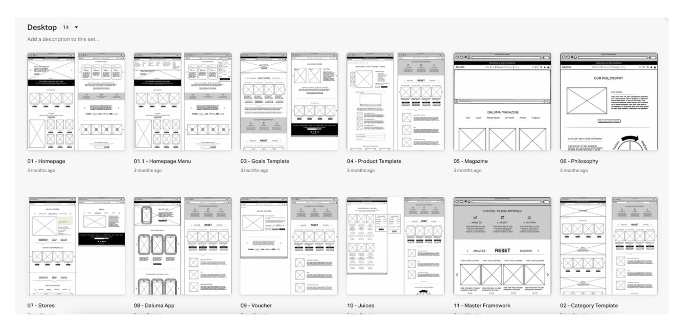
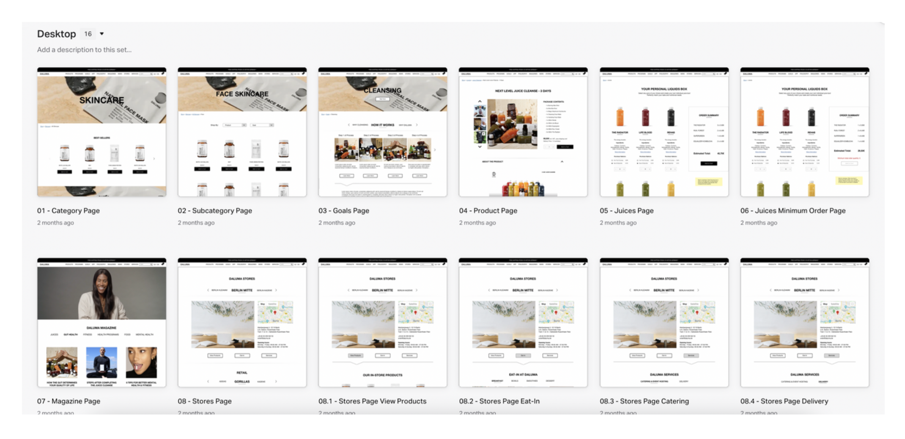
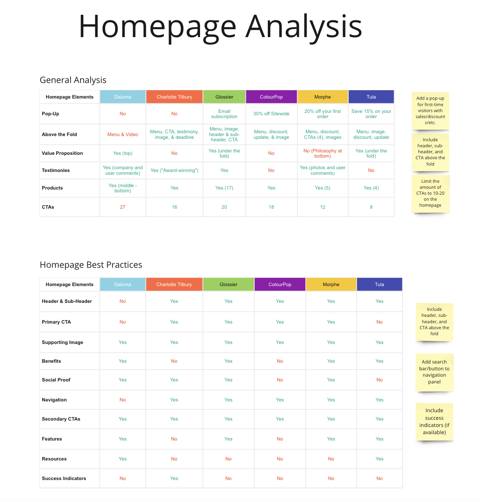
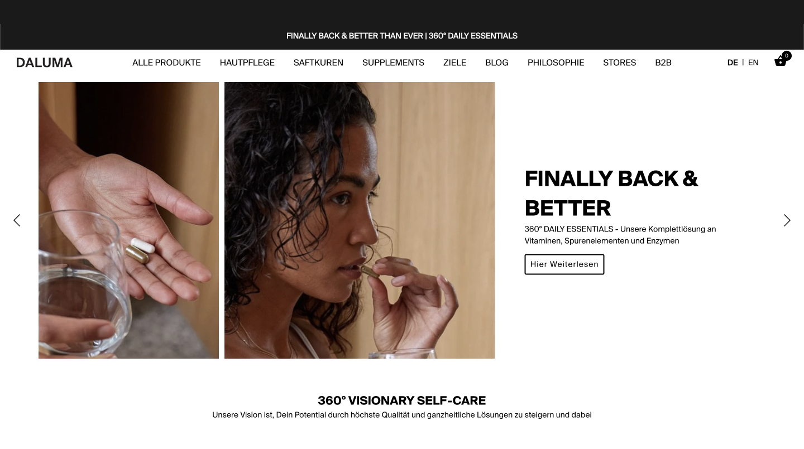

Increase engagement
Encourage users to explore products and spend more time on the platform.
DALUMA is a holistic health brand offering wellness products through cafés and an e-commerce platform. As the business expanded its digital presence, the website struggled to guide users smoothly from discovery to purchase.
I was brought in to redesign the e-commerce experience with a focus on improving engagement, reducing friction, and creating a more seamless checkout journey.
My role combined UX strategy, research, interface design, SEO considerations, and cross-functional collaboration to deliver a more intuitive and conversion-focused experience.
DALUMA was facing two key business challenges:
Users were adding products to their cart but abandoning the experience before checkout.
Many visitors were leaving the site without meaningfully engaging with content or products.
How might we create an experience that better guides users from curiosity to confidence and ultimately to conversion? This required balancing business goals with a clearer, more intuitive user journey.
To guide the redesign, we aligned around three priorities:
Encourage users to explore products and spend more time on the platform.
Simplify navigation and improve pathways to conversion.
Surface products, value propositions, and CTAs while strengthening SEO.
I began by analyzing user behavior through heatmaps and screen recordings to better understand where friction existed within the current experience.

A major insight emerged almost immediately:
Nearly 50% of users were leaving the homepage above the fold.
This meant many visitors never reached DALUMA's product offering at all.
Through behavioral analysis, we identified key issues, such as weak information hierarchy on the homepage, a lack of clear calls-to-actions above the fold, friction in navigating product content, and missed opportunities to communicate value early on.
To validate findings, I combined this research with a competitor analysis across leading wellness brands, heuristic & usability evaluations, and SEO keyword research to improve discoverability and search intent alignment. Rather than following trends, I narrowed recommendations to patterns that consistently demonstrated stronger usability and conversion outcomes.


Based on the findings, I redesigned the website architecture to create a clearer and more intentional user journey. This included improving navigation and page hierarchy, restructuring homepage content for faster comprehension, and introducing stronger CTAs above the fold. I also improved product discoverability and simplified pathways toward checkout.

I created over 50 low-fidelity wireframes to explore different layouts and interaction patterns. After multiple rounds of refinement and feedback, these evolved into high-fidelity mockups using real content and imagery to better simulate the final experience and improve collaboration with development.

Throughout the redesign, ideas were continuously tested against behavioral insights, competitor benchmarks, usability principles, and stakeholder feedback. This iterative approach helped ensure design decisions remained grounded in both user behavior and business outcomes rather than assumptions.
One key learning was the importance of simplifying information early (particularly above the fold) where first impressions heavily influenced engagement.

Within just one week of launching the homepage, the results showed significant improvement:
+200%
increase in average session duration
+42%
increase in conversion rates
Beyond metrics, the redesign created a more intuitive browsing experience, stronger product discoverability, improved clarity and navigation, and a more scalable digital foundation for future growth.

This project deepened my understanding of how thoughtful UX decisions can directly influence business performance within e-commerce environments. I learned the value of combining behavioral data with design intuition, using real user behavior to challenge assumptions and guide priorities.
Looking back, I would introduce earlier task-based usability testing for redesigned experiences and establish a more structured development timeline to allow additional refinement before launch. Most importantly, this project reinforced that even small improvements in structure, hierarchy, and clarity can have a meaningful impact on both user experience and conversion.
"Youlia consistently executes her work before deadlines while keeping our long-term goals in mind, truly embodying our mission to identify the problem before tackling the solution. She stands out for remarkable work ethics through kindness, diligence, and ambition. She has created significant value and shown outstanding efficiency in delivering results."
A systematic approach to solving complex problems, ensuring every decision is backed by research and user needs.